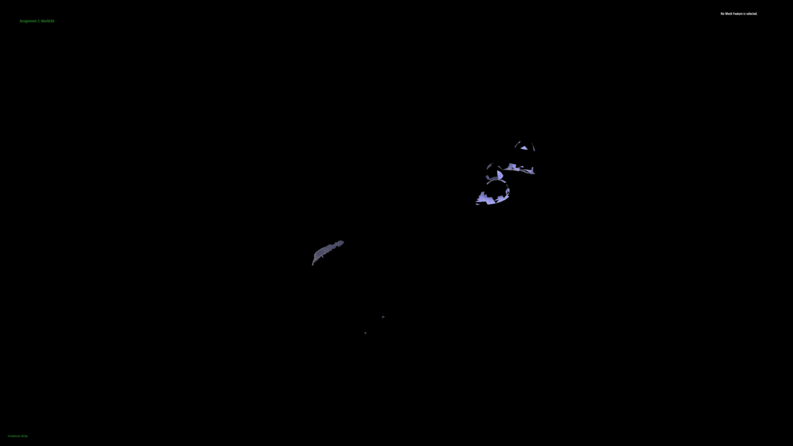

Abstract
Our project accomplishes two main goals. First, we want to take a point cloud and convert it into an accurate, well formed mesh. While point clouds are useful in storing the points of various locations of an image, a mesh is more informative and models the image more in real-life. Meshes are also a standard when performing more robust analysis and modeling. The second problem we are trying to solve is enhancing the quality of the mesh. More naive techniques for regularizing a mesh may result in irregularity of the polygons and oversmoothing. We want to ensure that the meshes we create can be utilized properly for analysis, processing, etc.
Technical Approach
Boilerplate & Datasources
We first started the project by modifying our (Tiger Ma and William Shue’s) final code for project 2 Meshedit as per suggestion by a TA to reduce the amount of boilerplate code needed for our project. Specifically we modified main.cpp to be able to parse in .csv files which is what the input point cloud is formatted as. Next, we obtained point cloud datasets by cleaning data from online sources. For comparison’s sake, we also generated some point clouds with a simple program from .dae files that shipped with project 2, including cow.dae, teapot.dae, etc. The goal was to be able to directly compare the generated meshes with the one from the original .dae file.
Ball-Pivoting Algorithm
At a high-level, our ball-pivoting algorithm (BPA) takes in as input a list of vertices, which are labeled with their position and vertex normal. It outputs a Polymesh data type that is represented by a list of triangles. The algorithm is heavily based on the 1999 paper The Ball-Pivoting Algorithm for Surface Reconstruction. The major functions written to accomplish this include the queryGrid(), findSeed(), ballPivot(), bpa(), output() which will be covered in detail later.
queryGrid()
As suggested in the paper, to help with the time efficiency of BPA, we need a data structure that can perform efficient spatial lookup of all neighboring points of a specific position. Which we accomplished with a 3D voxel grid created by subdividing the bounding volume of the point cloud by cubes of dimension p, which is the ball radius used in the algorithm. By populating the grid with the vertices during preprocessing, we can get all vertices in a 2p neighborhood of a queried position in constant time.
findSeed()
The algorithm begins by finding a suitable “seed triangle”, which is selected using three conditions. First, the points must be relatively close to each other, which we accomplish using queryGrid(). Second, the triangle formed must have a normal that doesn’t deviate too much from the average of the vertex normals of the triangle. Lastly, there should be few other points in the vicinity of these points. The paper states that no points should exist in the neighborhood, but we decided to make exceptions to this rule using a tolerance for coplanarity. This is due to the fact that we noticed holes in even simple meshes like cube.dae.
ballPivot()
This function performs the virtual “pivoting” of a ball of radius p around an edge to detect nearby vertices that could be incorporated into the mesh as a new triangle. For geometric intuition, the ball is initialized as a sphere positioned such that it is tangent to its seed triangle’s three vertices. For a given edge, it will then pivot about the midpoint of said edge and any point that is caught in the toroidal volume of rotation will be considered as a new vertex to add. We followed the paper’s high-level description of this by performing geometric vector operations such as sphere-circle intersections, but had to add some extra conditions involving surface normals to prevent weird non-manifold geometries from being generated.

|
bpa()
This utilizes all the aforementioned functions to construct the mesh incrementally by generating seed triangles when the program is stuck, and iterating through active edges and calling ballPivot() on them to generate more edges and triangles. In order to perform these tasks properly, we need a proper “Edge Front” in our program to maintain the order in which we process edges and for edge addition and removal. The paper suggested a list of linked-lists, which we tried to implement at first, but we encountered many bugs due to the many pointer assignments in the linked list loops. Additionally, the paper outlines two schemes, join and glue, for reconciling special cases of edge additions that result in duplicate edges. Glue was vaguely touched upon in the paper and was hard to implement without many bugs. In the end, we resolved this by implementing our “Edge Front” using two queues instead, which was much simpler to work around, but this came at the cost of slower time complexity due to losing the speed of linked list operations.
output()
The bpa() call requires a hyperparameter of p, the radius of the ball used. We realized through testing that the choice of p was crucial to the mesh quality. A radius that is too small will fail to connect any trio of points at all and the output will be empty. A radius that is too big would skip over the finer features of the mesh and directly connect bigger features together, resulting in a boxy low-poly look. Taking inspiration from the paper, we created our overall routine to perform bpa() across a range of radii, while maintaining the same front structure across each run. This way, we start small and generate the finer features of the mesh, and by the end we have connected triangles of all size ranges. In our final rendition, we chose p to start at the minimum pairwise distance between vertices and then ramped up in 20% increments until a threshold of vertices were covered, a hard iteration limit was reached, or p spanned the entire bounding volume. Some issues we still run into are extraneous triangles being generated by vertices on the front forming edges amongst themselves forming a “webbed” like structure.
Ball-Pivoting Algorithm Difficulties & Lessons
The bpa() call requires a hyperparameter of p, the radius of the ball used. We realized through testing that the choice of p was crucial to the mesh quality. A radius that is too small will fail to connect any trio of points at all and the output will be empty. A radius that is too big would skip over the finer features of the mesh and directly connect bigger features together, resulting in a boxy low-poly look. Taking inspiration from the paper, we created our overall routine to perform bpa() across a range of radii, while maintaining the same front structure across each run. This way, we start small and generate the finer features of the mesh, and by the end we have connected triangles of all size ranges. In our final rendition, we chose p to start at the minimum pairwise distance between vertices and then ramped up in 20% increments until a threshold of vertices were covered, a hard iteration limit was reached, or p spanned the entire bounding volume. Some issues we still run into are extraneous triangles being generated by vertices on the front forming edges amongst themselves forming a “webbed” like structure.
Mesh Regularization Algorithm
At a high level, our mesh regularization algorithm takes in a well-formed mesh and regularizes it to form well-formed, isotropic triangles. It performs the following local operations: edge split, edge collapse, edge flip, vertex shift, vertex projection. The central algorithm iterates through the mesh data structures and conditionally performs each operation depending on edge length or vertex valence properties. We referred to the lecture slides from CCSI 599: Digital Geometry Processing, Spring 2015 and the paper Adaptive Feature-Preserving Isotropic Remeshing by Yuan Yao.
Central algorithm: regularize_mesh()
This function runs the central algorithm of our mesh regularization. First, we compute the target length, L, of the edge we want in our regularized mesh. We decide this to be the average length. We set L_max to be (4/3)*L and L_min to be (4/5)*L. We iterate through every edge and if the edge is longer than L_max, we split it. After this step, we have adjusted edge lengths in our mesh to be roughly the same length since we have addressed really long edges. We continue our algorithm by flipping edges to minimize the valence excess of our vertices. The optimal valence of a boundary vertex is 4 and for an interior, it is 6. We calculate the sum squared difference between the valence and the optimal valence for the four vertices adjacent to the given edge. If the difference goes down after flipping, then we flip. Else, we don’t. Lastly, we shift vertices to centralize its location relative to its neighbors.
splitEdge()
We used our logic from project 2. Our algorithm follows this diagram:
collapseEdge()
To create the collapse algorithm, we made the following diagram to help us with pointer manipulation. The picture on left is how the input shape would look and the right is how the mesh would look after collapsing the middle edge.
flipEdge()
We used our logic from project 2. We used the following diagram.
shiftVertex()
For shiftVertex, we first compute the average position of the given vertex’s neighbors. We iterated through the vertex’s neighborhood using halfedge pointers and computed the mean position c. We followed the equation denoted in our resource and updated the position p as: p + (I - nnT)*(c - p), where n is the normal of the vertex.
|
|
|
Mesh Regularization Difficulties & Lessons
One of the biggest challenges was being able to connect this algorithm with the outputs from the ball pivot algorithm. Because we are manipulating halfedge mesh pointers, we require the inputs to be well-formed and not be non-manifold. If given more time, we would have added functionality that verifies and fixes the inputs so we can integrate both parts of the project together. Additionally, in the paper and lecture slides that we referred to, it had a collapse edge as the second step in the overall algorithm. As mentioned and shown in the images above, we implemented this transformation and although it works isolated, we excluded it from the central algorithm. This is because this operation can cause issues for a non-manifold mesh and for the purpose of quality, we decided it would be better to not include it. Lastly, another challenge we encountered was implementing the projection method. This was the fifth step of the algorithm listed in our resources. Finding the nearest triangle from the original mesh of each vertex seemed straightforward but it was hard to integrate with the ball pivoting algorithm code and the halfEdgeMesh data structure from project 2. If given more time, we definitely would have figured it out.
Results
Ball-Pivoting Algorithm Results
|
|

|
|
|

|

|
||
|
|
|
|
|
|
|
|
|
Mesh Regularization Results
|
|
|
|
References & Contributions
References
- [1] The Ball-Pivoting Algorithm for Surface Reconstruction by F. Bernardini, J. Mittleman and H. Rushmeier, 1999.
- [2] Digital Geometry Processing: Remeshing by Hao Li, 2015.
- [3] Adaptive Feature-Preserving Isotropic Remeshing by Yuan Yao, 2019
Contributions
- William Shue
- stuff
- William Louis
- stuff
- Amrita Rajan
- stuff
- Tiger Ma
- stuff